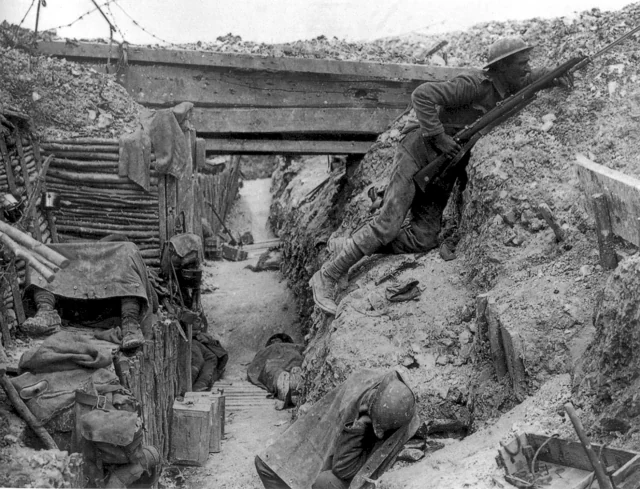

Se sammenhengene.Forstå verden.
Utforsk mennesker, samfunn og historie. Lær ordene, undersøk kilder og bygg dine egne forklaringer.
To temaer klare til bruk · Lett vei og Vanlig vei · Arbeid alene eller sammen
Hva vil du utforske?
Velg et tema for å begynne.
Arkivfoto · John Warwick Brooke / IWM Q 3990 · Public domainKonflikt og fred
Hvorfor blir det krig? Hvordan skaper vi fred? Utforsk verdenskrigene, den kalde krigen og konflikter i vår tid.
Levekår handler om mer enn penger.
Rikdom, fattigdom
og levekår
Hvorfor er mulighetene ulike? Sammenlign land, undersøk årsaker og vurder hva som kan endres.
Les. Undersøk. Forklar.
Begge temaene har fagtekst på to språknivåer, ordbank med «Mitt språk», aktiviteter, kontrollspørsmål og skriveoppgaver.
Din arbeidsbok
Svar og framgang lagres i nettleseren på enheten. Hvert tema har egne svar. Åpne «Mine svar» inne i temaet for å laste ned eller skrive ut arbeidet.
Til læreren: innhold og læreplankobling
Dette er en felles inngang til læringsløp i samfunnsfag FOV modul 4. De to temaene dekker deler av kompetansemålene. Flere områder i læreplanen krever egne opplegg, blant annet politisk system, arbeidslivets reguleringer og samer og nasjonale minoriteter.
Hvert tema har et lærerrom med faglig retning, kildegrunnlag, vurderingsstøtte og råd om tilpasning. Lett vei retter seg mot elever som trenger støtte rundt A2, og Vanlig vei rundt B1. Dette er pedagogiske tilpasninger, ikke formelt vurderte språknivåer.
Lærerrom: Konflikt og fred →
Lærerrom: Rikdom, fattigdom og levekår →